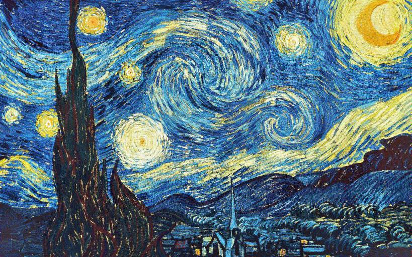

Neural Style Transfer
Shiva Peri -
Assignment 4
Part 1: Reconstruction Results
In part 1 of this assignment, we used the neural style transfer
optimization with pretrained vgg19 model architecture and minimized the
ContentLoss only. Ideally, the resultant image is a reconstruction of
the content image. Below we illustrate the impact of applying
ContentLoss after various convolutional blocks in the vgg19 feature
extractor. Clearly we can see that the earlier in the feature extractor
we observe the ContentLoss, the better the reconstruction. Conversely,
the later we observe the ContentLoss, the noisier the reconstruction.
This makes sense, as the feature dimensions get smaller deeper into the
network. As a result, there are less constraints to minimize, and more
of the noisy input image can remain unchanged.
layer 1 (seed = 0)

layer 2 (seed = 0)
layer 2 (seed = 10)
layer 3

layer 4
layer 5
Part 2: Texture Synthesis Results
In part 2 of this assignment, we used the neural style transfer
optimization with pretrained vgg19 model architecture and minimized the
StyleLoss only. Ideally, the resultant image maintains the noise of the
input image, but has a stylized texture. Notably, the earlier in the
vgg19 architecture we observe the StyleLoss, the texture is stylized in
larger regions. As we observe the StyleLoss at deeper levels, the
texture is stylized at a finer grain. Note that observing the StyleLoss
after all convolutional blocks results in the qualitatively best
stylized texture. This is likely because both fine and course details
are maintained.
*prior to this test, I used lr=1, however, with layer5 and lr=1, the
resultant image was entirely black. From this point on, all generated
images use lr=0.1
layer 1 (seed = 0)

layer 2 (seed = 0)
layer 3 (seed = 0)
layer 4 (seed = 0)
layer 5* (seed = 0)
all layers (seed = 0)
Part 3: Style Transfer Results
In the final part, we optimize the image according to both the
ContentLoss and StyleLoss. We can see qualitatively in all included
examples that using the content as the input image provides a better
result than using noise as the input image.
Parameters used: ContentLoss after conv_4, StyleLoss after all conv
blocks, 300 iterations, style_weight=1000000, content_weight=1

Style

Content
Noise Input (lr = 0.1)

Content Input (lr = 0.1)

Style

Content
Noise Input (lr = 0.1)
Content Input (lr = 0.1)

Style

Content
Noise Input (lr = 0.1)
Content Input (lr = 0.1)
Noise Input (lr = 0.5)
Content Input (lr = 0.5)